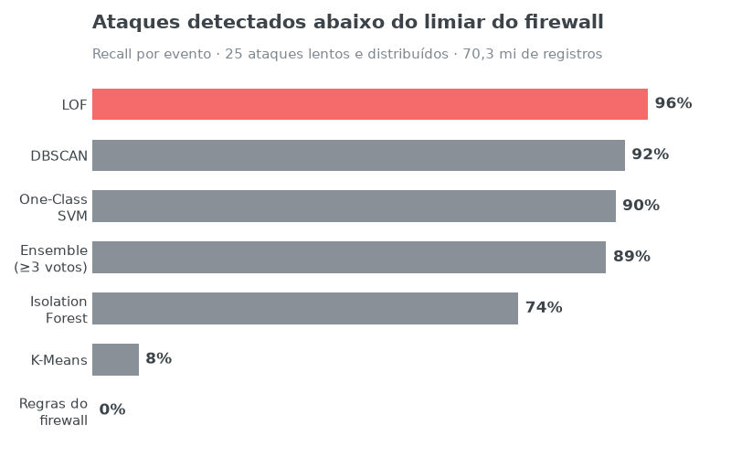
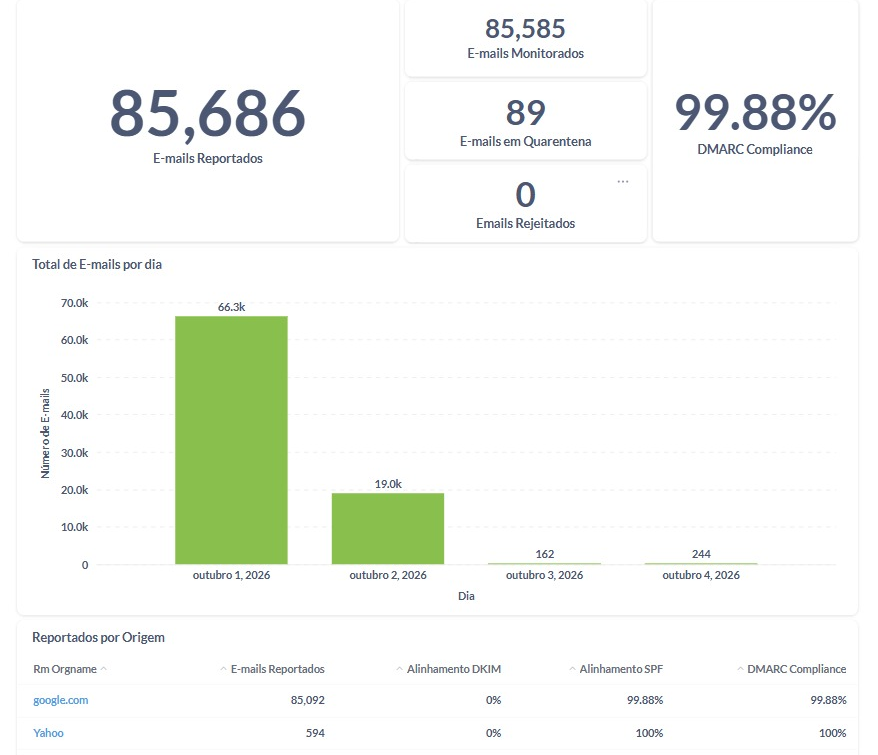
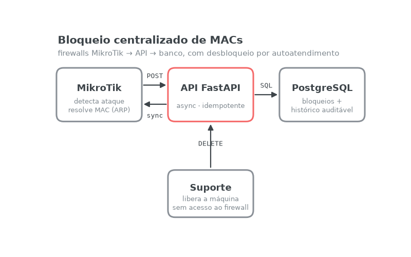
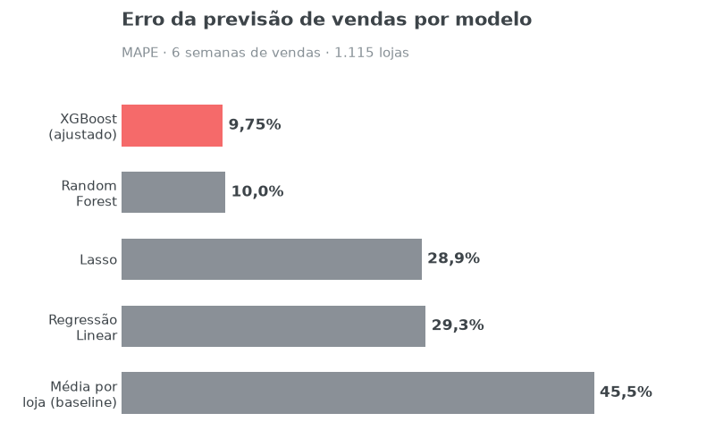
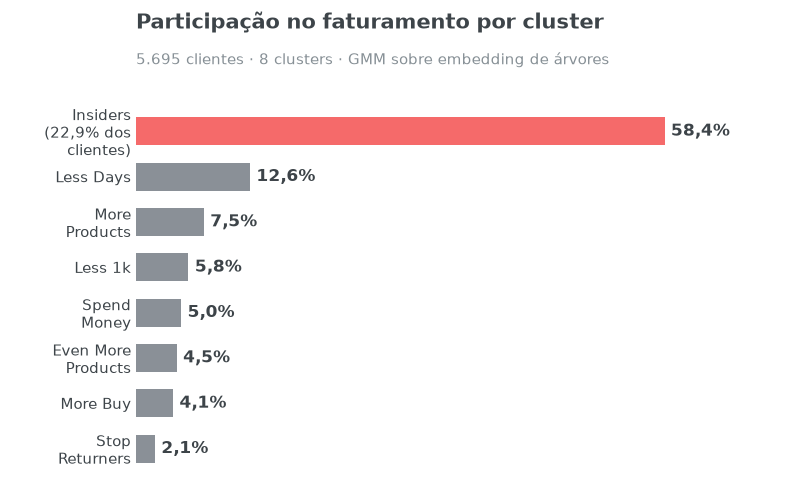
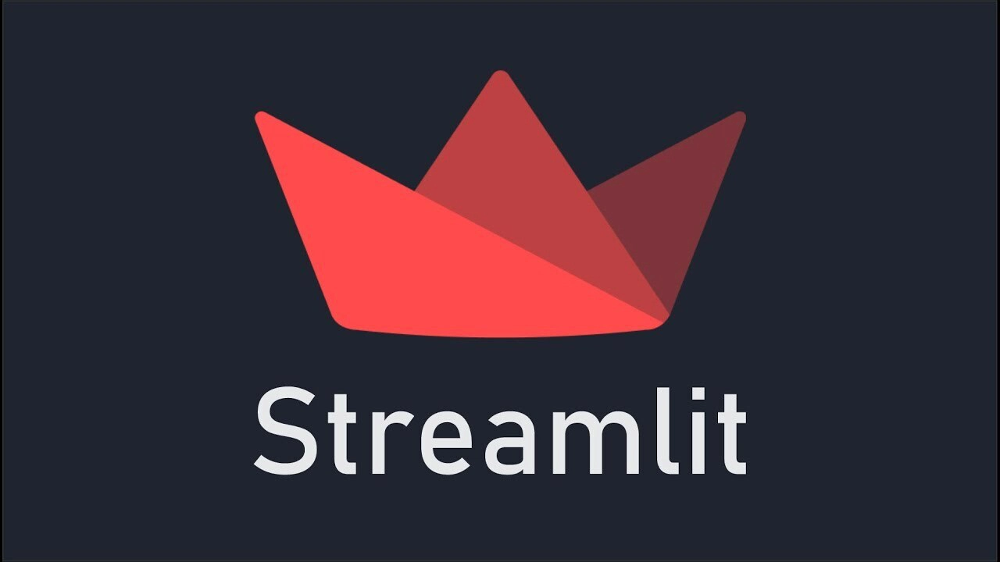

Programming Languages and Databases
- Python for data analysis
- Web scraping with Python
- SQL for data extraction
- SQLite, MySQL and PostgreSQL databases
- Polars
I'm Igor Monteiro, a Computer Engineering senior at the Instituto Federal Fluminense (IFF), Brazil. For the past two years I have worked as an IT intern at the City Hall of Campos dos Goytacazes, building data pipelines and production services with Python, PostgreSQL, Docker and Kubernetes.
In my undergraduate thesis, I built machine learning anomaly detection on 70 million network log records. I'm looking for a role as a Data Engineer, Machine Learning Engineer or Data Scientist, and I speak English (advanced) and German (intermediate).
Projects published on GitHub across data science, data engineering and network security: from training and evaluating machine learning models to production data pipelines on Kubernetes and APIs that automate firewall operations. Details on each one are in the projects section below.
At the City Hall of Campos dos Goytacazes, I worked in IT with a focus on automation, data auditing and information security. Highlights:
These solutions made the City Hall's IT processes more secure, transparent and cost-effective, using open-source technology and custom automation.

The static rules of the MikroTik firewalls detected none of the 25 low-and-slow, distributed attacks tested. I built an observability stack (OpenTelemetry, Loki and Grafana) that collected 70 million records in one week and trained unsupervised detectors on those logs: LOF detected 96% of the attacks, and a near-real-time inference service raises alerts with a median latency of about 7 minutes.

DMARC reports arrive by email as hundreds of compressed XML files that nobody can read by hand. I built a production data pipeline that reads the mailbox over IMAP, parses the reports and loads them into PostgreSQL, running as a Kubernetes CronJob with GitOps delivery. The Metabase dashboard tracks about 85,000 emails over 4 days at 99.88% compliance, and revealed that DKIM alignment was at 0%.

Each router blocked attacking devices on its own, and releasing a cleaned machine required a ticket and a manual firewall edit. I developed an async API that centralizes blocks in PostgreSQL with an auditable history, plus RouterOS scripts that keep the routers in sync, so support staff can unblock machines through self-service. Prototype tested end to end and being prepared for production.
A machine learning model that predicts how likely car insurance customers are to be interested in health insurance, served through a REST API to optimize cross-sell campaigns.

Six-week sales forecast for the 1,115 stores of a drugstore chain. XGBoost had a mean error of 9.75%, compared with 45.5% for a historical-average forecast, and the CFO checks the results through a Telegram bot.

Segmentation of 5,695 e-commerce customers with clustering (GMM on a tree-based embedding) to select the members of a loyalty program. The Insiders group holds 22.9% of customers and about 58% of revenue.

A management dashboard with the key metrics of a food delivery marketplace in India, built with Python, data wrangling and business reasoning. The dashboard is hosted in the cloud and available through a public link from any device.
Feel free to reach out
Design: HTML5 UP